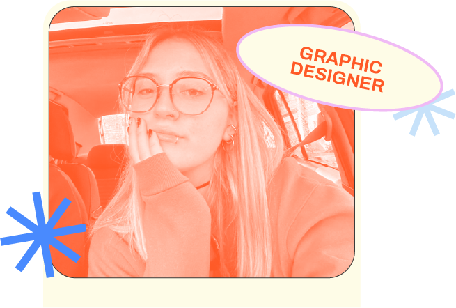
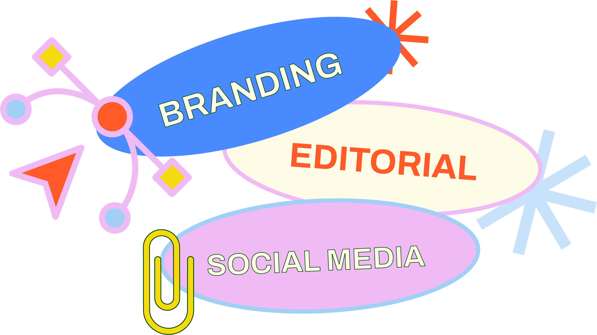
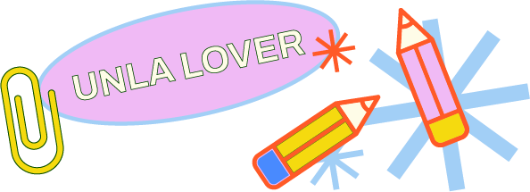
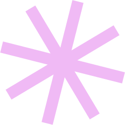

¡Hola! Soy
Luni Campo
Te invito a conocer mi experiencia laboral, estudios académicos y demás datos relevantes de mi carrera profesional.
Datos Personales

28-06-2000

lunamcampo@gmail.com

11-44721562

Cañuelas, Buenos Aires
Sobre mí
Estudiante avanzada de la Licenciatura en DyCV especializada en identidad de marca, diseño editorial y preprensa. Combino el rigor técnico y la organización metodológica con un criterio estético enfocado en resultados. Cuento con experiencia en agencia de MKT habiendo diseñado piezas de alto impacto para clientes en eventos clave como DevConnect Arg.2025 y optimizado la imagen visual de clientes, impulsando el posicionamiento y crecimiento de sus marcas.
Áreas de especialización y dominio
- Identidad & Branding: Desarrollo de sistemas gráficos de marca, manuales de marca (BrandBooks / BrandLooks) e identidades integrales.
- Diseño Editorial & Publicitario: Diagramación, maquetación, cartelería/pósters, piezas publicitarias y materiales impresos institucionales.
- Preprensa & Producción: Preparación técnica de originales de impresión, gestión de capas, troqueles y acabados especiales.
- Diseño Digital & Multimedia: Piezas gráficas para plataformas digitales, edición de video dinámico y maquetación web/email.

Experiencia Laboral
- HABLA AGENCY (Enero 2025 - Junio 2026) Diseñadora Gráfica - Agencia de Marketing Digital
- Sistemas de Identidad & Branding: Desarrollo y estructuración de identidades visuales, manuales de estilo (Brand Books / Brand Looks) y universos gráficos para marcas de diversos rubros.
- Diseño Editorial & Material Impreso: Creación de piezas publicitarias, folletería, cartelería e impresos institucionales manteniendo coherencia estética y conceptual.
- Preprensa y Producción Técnica: Preparación de archivos finales para imprenta (armado de originales, control de color, configuración de capas, troqueles y terminaciones especiales).
- Comunicación Visual Digital: Diseño de piezas gráficas de alto impacto visual y edición de video multimedia/dinámico (CapCut, Premiere) para estrategias digitales.
- Soportes Web & Email Marketing: Actualización visual de sitios en WordPress y diseño/maquetación de newsletters en Envialo Simple.
- AYUDANTE DE CÁTEDRA UNIVERSIDAD NACIONAL DE LANÚS (Agosto 2024 - Noviembre 2025) Cátedras asignadas: Taller de Diseño 1 / Diseño 1 | Geometría Descriptiva Aplicada
- Guiar y acompañar el proceso creativo y la fundamentación técnica/conceptual de los estudiantes en proyectos de diseño e investigación gráfica.
- Colaboración activa en las instancias de corrección de trabajos prácticos, proyectos integradores y evaluaciones.
- MUNICIPALIDAD DE CAÑUELAS (2021 - 2022) Dirección de Juventud- Diseñadora Gráfica & Comunicación
- Diseño de Comunicación Pública & Cultural: Desarrollo de piezas gráficas, informativas y publicitarias para eventos y campañas institucionales orientadas a la comunidad.
- Gestión de Identidad Digital: Coordinación y diseño visual para plataformas institucionales.
Formación académica
LIC. EN DISEÑO Y COMUNICACIÓN VISUAL (UNLa 2023- Presente)
BACHILLER EN HUMANIDADES Y CIENCIAS SOCIALES (2015 - 2017)

Herramientas
- Diseño Gráfico & Editorial: Adobe Photoshop, Adobe Illustrator, Adobe InDesign.
- Prototipado: Figma (Nivel Intermedio).
- Edición de Video & Motion: CapCut, Opusclip, Adobe Premiere (Básico).
- Web & Plataformas: WordPress (Básico), Meta Business Suite, Envialo Simple, Microsoft Office.
Habilidades
- Trabajo bajo presión y cumplimiento de plazos.
- Creatividad aplicada al diseño editorial, identidad y sistemas gráficos.
- Facilidad para aprender e incorporar nuevas herramientas.
- Responsabilidad, compromiso y atención al detalle.
Idiomas
- Español: Nativo
- Inglés: Intermedio (lectura y escritura)
